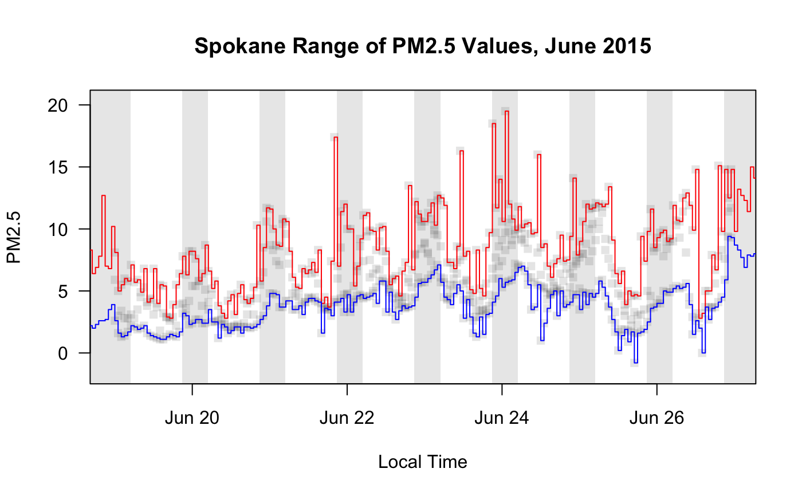

R/monitor_collapse.R
monitor_collapse.RdCollapses data from all the monitors in ws_monitor into a
single-monitor ws_monitor object using the function provided in the
FUN argument. The single-monitor result will be located at the mean
longitude and latitude unless longitude and latitude
parameters are specified.
Any columns of meta that are common to all monitors will be retained in the returned ws_monitor meta.
monitor_collapse(ws_monitor, longitude = NULL, latitude = NULL, monitorID = "generated_id", FUN = mean, na.rm = TRUE, ...)
| ws_monitor | ws_monitor object. |
|---|---|
| longitude | Longitude of the collapsed monitoring station. |
| latitude | Latitude of the collapsed monitoring station. |
| monitorID | Monitor ID assigned to the collapsed monitoring station. |
| FUN | Function to be applied to all the monitors at a single time index. |
| na.rm | Logical specifying whether NA values should be ignored when FUN is applied. |
| ... | additional arguments to be passed on to the |
A ws_monitor object with meta and data that for the the collapsed single monitor
After FUN is applied, values of +Inf and -Inf are
converted to NA. This is a convenience for the common case where
FUN=min or FUN=max and some of the timesteps have all missing
values. See the R documentation for min for an explanation.
N_M <- Northwest_Megafires # monitor_leaflet(N_M) # to identify Spokane monitorIDs Spokane <- monitor_subsetBy(N_M, stringr::str_detect(N_M$meta$monitorID,'^53063')) Spokane_min <- monitor_collapse(Spokane, monitorID='Spokane_min', FUN=min) Spokane_max <- monitor_collapse(Spokane, monitorID='Spokane_max', FUN=max) monitor_timeseriesPlot(Spokane, tlim=c(20150619,20150626), style='gnats', shadedNight=TRUE)title('Spokane Range of PM2.5 Values, June 2015')